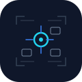
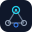

No photo. No initials in a gradient bubble. Abstract marks only — tuned for consulting / lead credibility.
Hub-and-spoke on a drafting frame — system design & ownership.

Lead node + services — principal engineer orchestration.

Structural metaphor — “architect” without civil-engineering clip art.
Platform / bounded context — deployment unit.
Pick G or H (or I/J) in chat, then we finalize one favicon + header lockup before site integration.